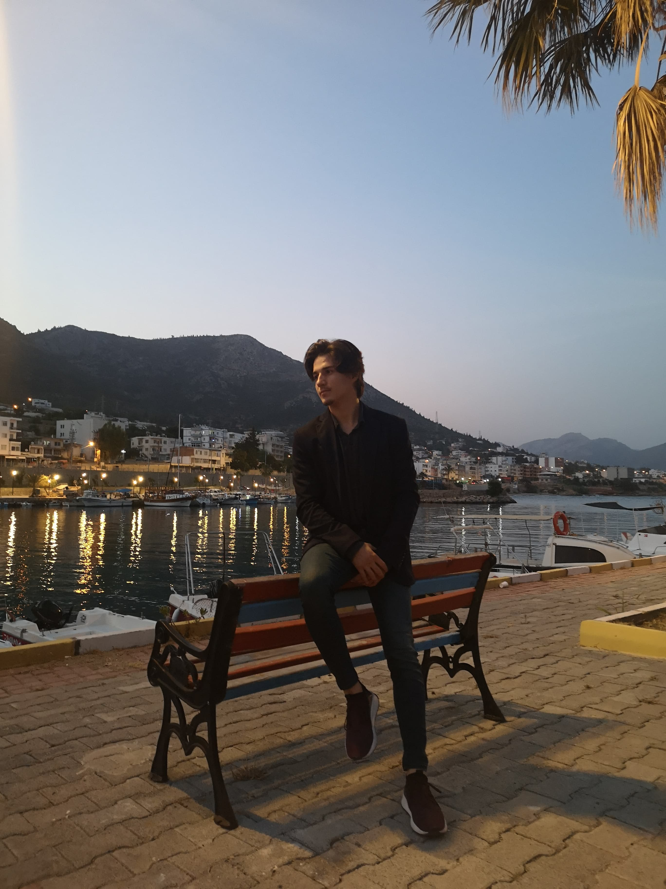
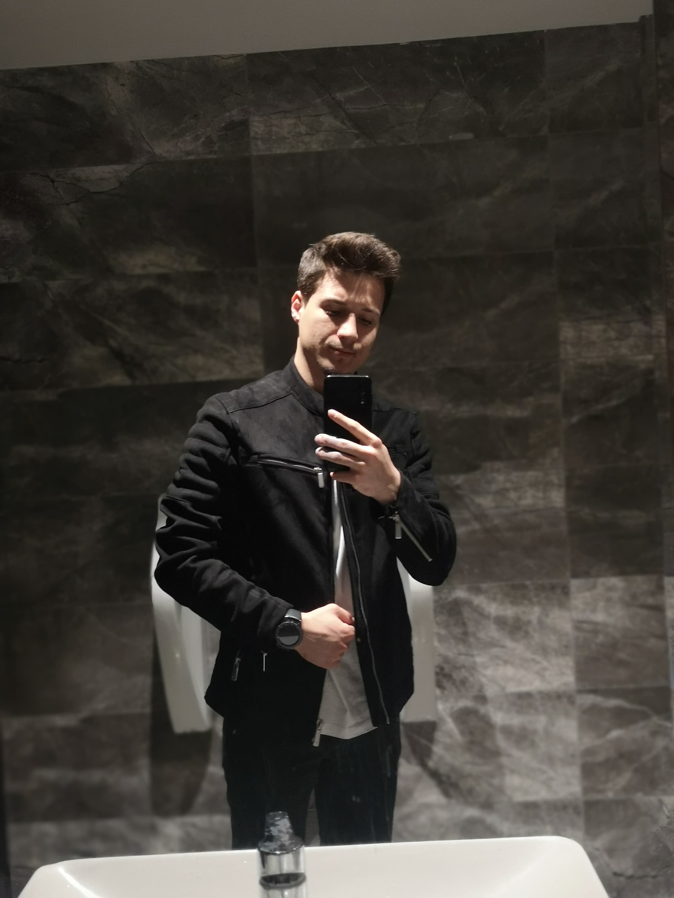
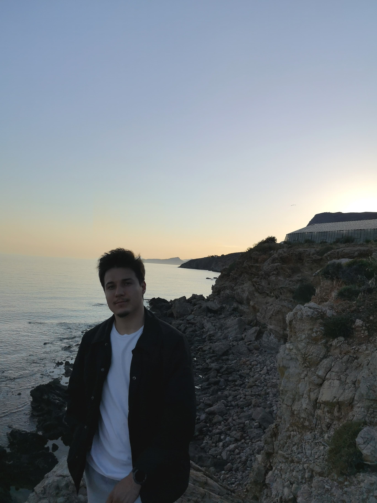
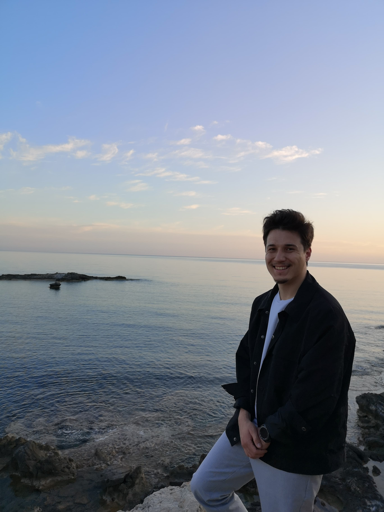
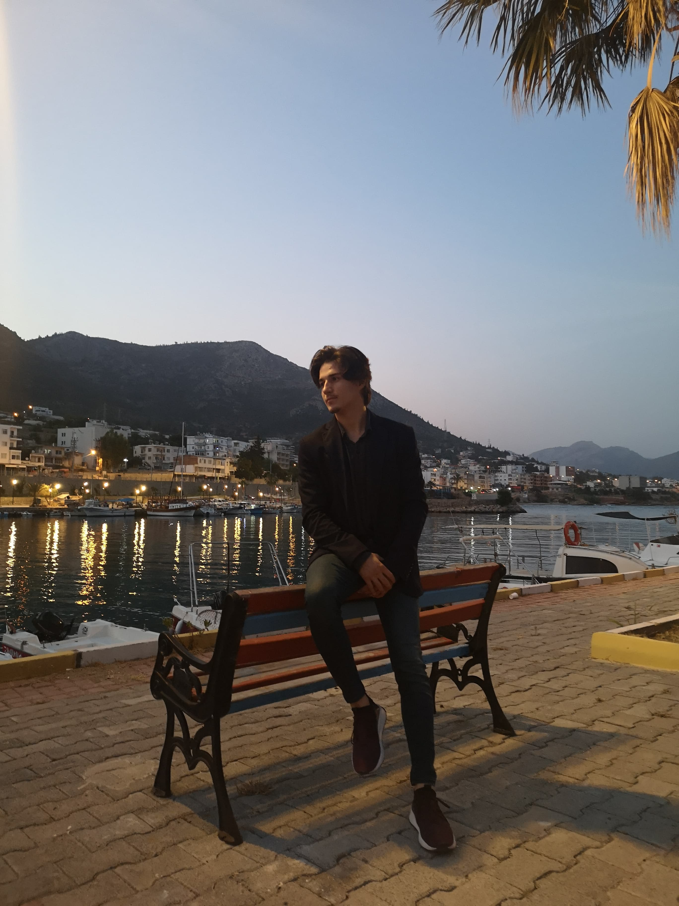
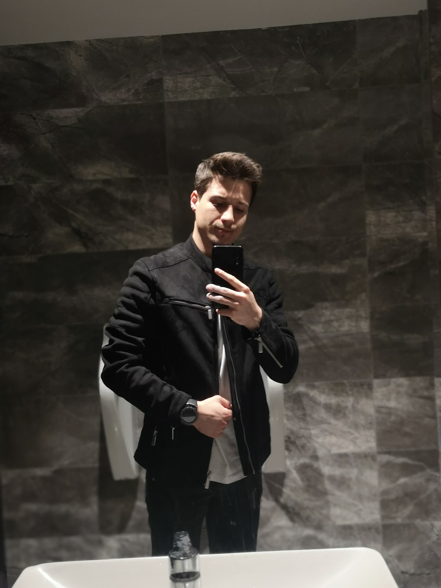
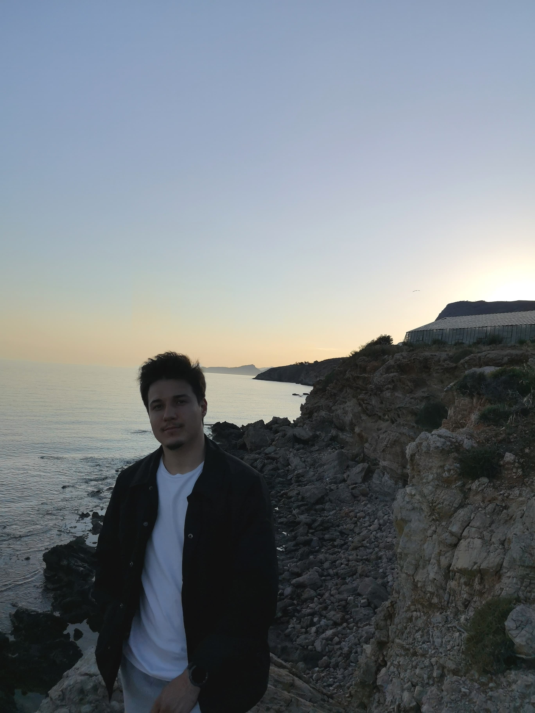
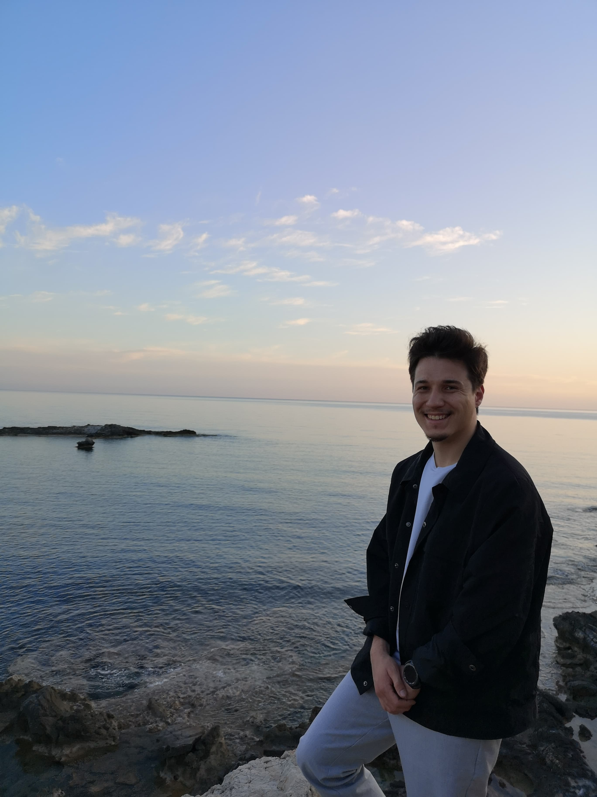

Merhaba, ben Muhammet Ali Şafak. 22 Mayıs 2000'de Mersin'in güzel ilçesi Anamur'da dünyaya geldim. Üç erkek kardeşimle birlikte, sevgi dolu ve birbiriyle güçlü bağları olan muazzam bir ailede büyüdüm. Eğitim yolculuğuma Silifke Gevher Nesibe Mesleki ve Teknik Anadolu Lisesi'nde yardımcı hemşirelik okuyarak başladım. Ancak sağlık alanının bana uygun olmadığını fark ettim ve rotamı değiştirdim. Üniversite sınavında Nuh Naci Yazgan Üniversitesi Elektrik-Elektronik Mühendisliği bölümünü tam burslu olarak kazandım.
Üniversite yıllarım, bana yalnızca akademik bilgi değil, aynı zamanda hayatın farklı yönlerini de öğretti. Ortalamam 4 üzerinden 3.01 olacak şekilde mezun oldum ve sonrasında kısa bir süre yapay zeka alanında çalıştım. Ancak, web development dikkatimi çekti ve bu alana yöneldim. Kod yazarken, bir projeyi sıfırdan inşa etmenin ve sonuçlarını görmenin verdiği tatmin duygusunu çok sevdim.
Hayatımın bu yoğun temposu içerisinde hobilerime de her zaman yer açtım. Yüzmeyi, gitar çalmayı, araba sürmeyi, kitap okumayı, şarkı söylemeyi ve bilgisayar oyunları oynamayı çok seviyorum. Bu aktiviteler bana hem zihinsel bir kaçış hem de enerji veriyor. Sevecen, duyarlı ve umutlu bir kişiliğe sahibim. Çevremdeki insanlara neşe saçmayı seviyorum ve her zaman pozitif bir enerji yaymaya çalışıyorum. Hayata karşı bu tutumum, beni her zaman ileriye taşımaya devam ediyor.


 






